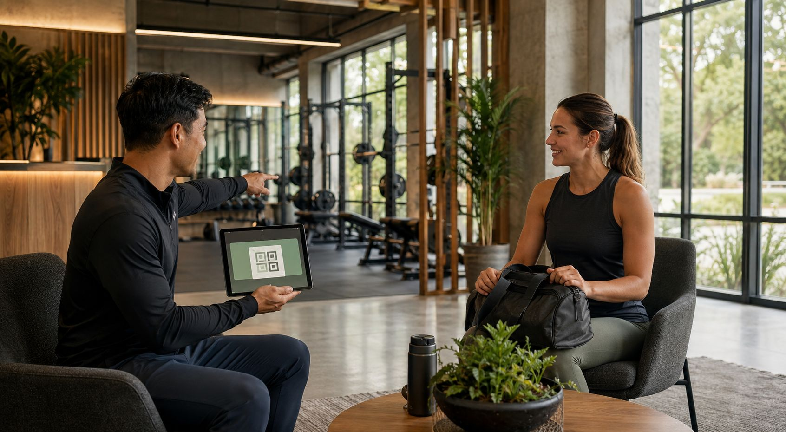
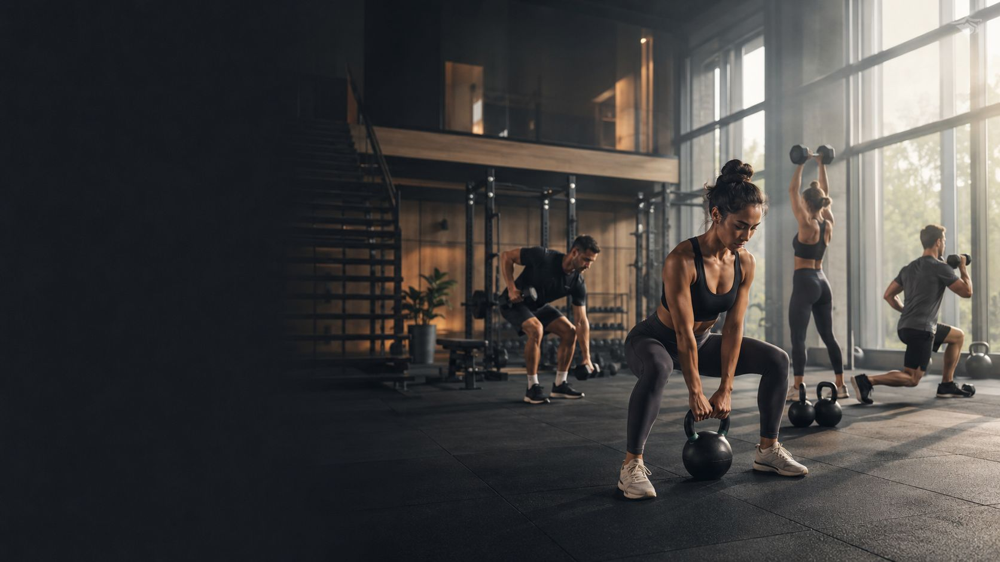
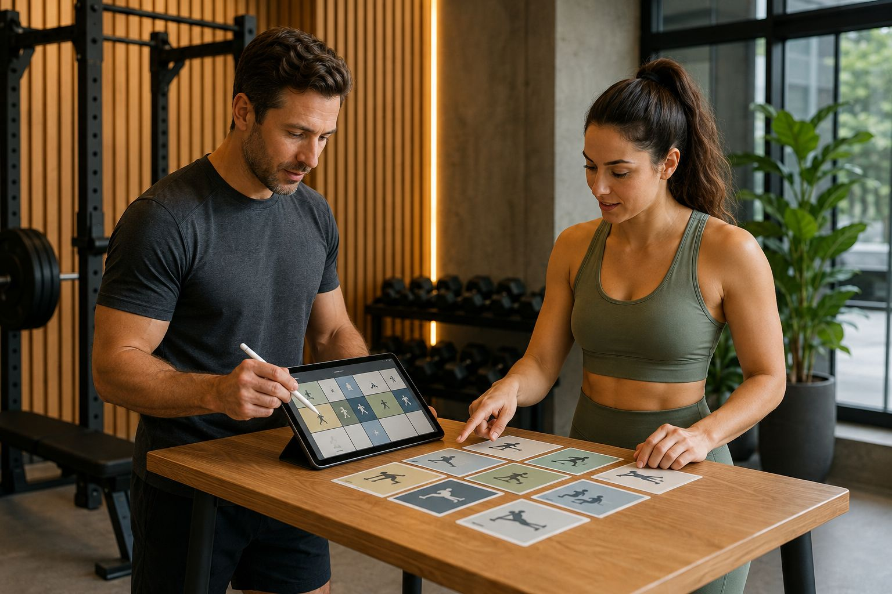

Core
Voor leden die een solide basis willen opbouwen met regelmatige check-ins.
- 2 sessions per week
- Baseline tracking
- Progress dashboard

Memberships
Van instap tot intensief begeleidingstraject: elke optie legt de nadruk op duidelijkheid, begeleiding en een logisch ritme.
Trajecten
Voor leden die een solide basis willen opbouwen met regelmatige check-ins.

Most selectedEen intensiever traject met coaching, periodisering en voeding in één duidelijke flow.

Voor leden die maximale persoonlijke afstemming en extra begeleiding zoeken.
Digitale opvolging
De combinatie van planning, reminders en eenvoudige feedback maakt het voor leden makkelijker om consequent te blijven.
Daardoor blijven memberships praktisch en transparant, zonder onnodige complexiteit.